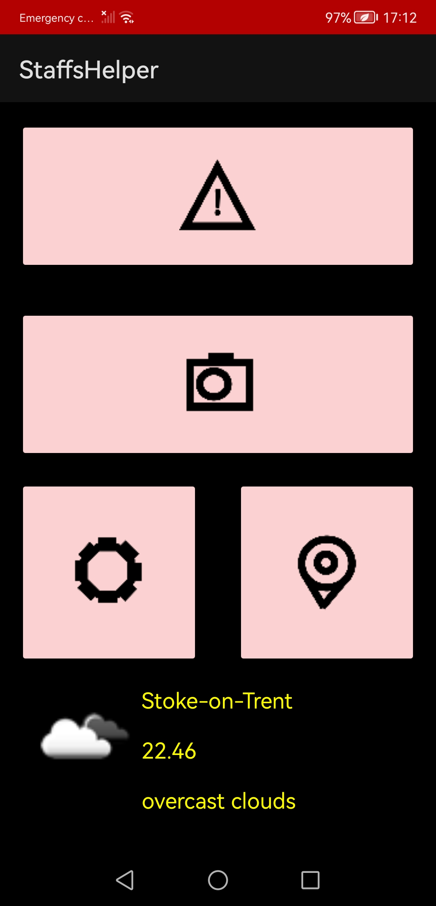
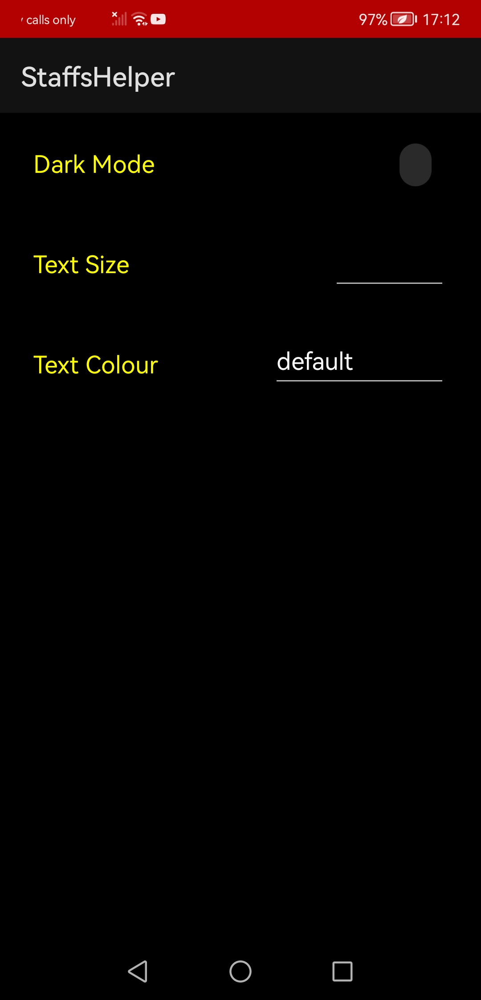
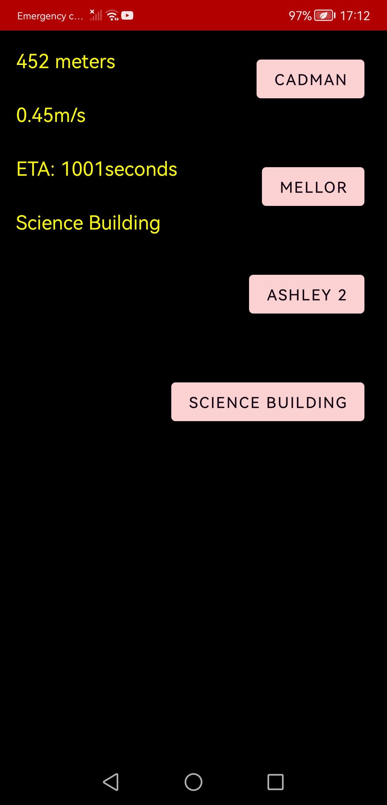

Android Mobile Development
This was a module where a android application had to be developed in Kotlin with Android Studio to create an application to help aide people with vision problems to help them with activities on Staffordshire University campus. this app had a number of features including a camera system using Android's cameraX. A map system which gets the user's GPS coordinates and tells them the distance to certain buildings on campus. The app also features a settings system to change the text size, colour as well as night/dark mode. (Github)
  